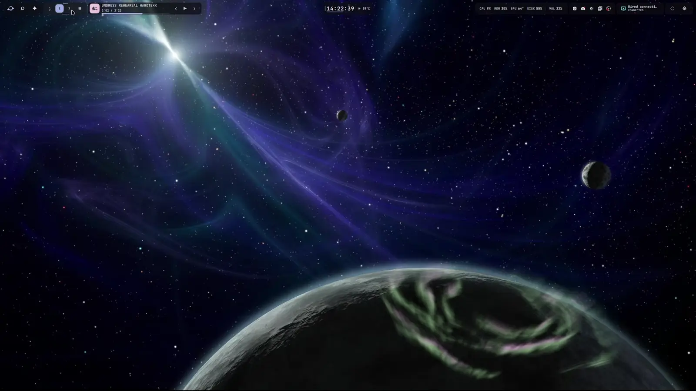

Aperture
A bar you arrange yourself.
A flexible bar for workspaces, media, system information, and everyday controls.

ArrangeMake space for the controls you actually use.
ReachOpen tools from a stable, always-visible bar.
AdaptKeep separate horizontal and vertical island layouts.
What it does
Your arrangement
Use Bar Studio to move islands, change placement, and keep your preferred layout.
Everyday controls
Reach workspaces, applications, media, network, audio, and system information.
Steady targets
Icons can animate, but the area you click stays where it is.
One connected shell
Open focused Ephemeris tools from the bar without creating another desktop layer.
Try it
After installing, start the shell and open Bar Studio to arrange your islands.
Get Tonantzintlablackhole start blackhole bar-edit